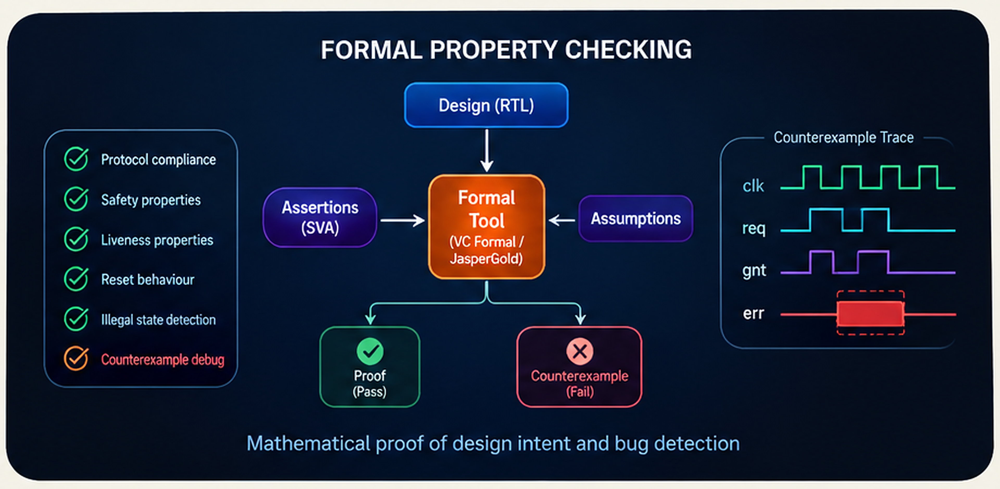
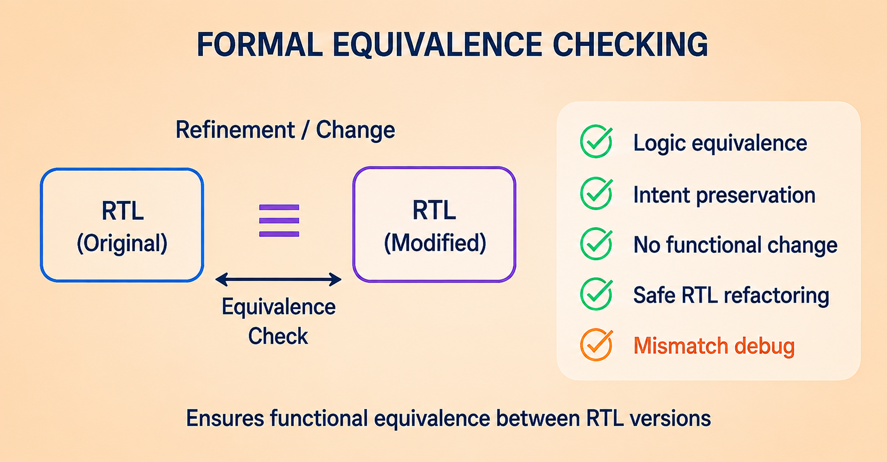

FORMAL PROPERTY CHECKING & FORMAL EQUIVALENCE CHECKING
We use formal methods to mathematically explore design behavior, prove or disprove properties, and verify that implementation changes preserve intended functionality. Property checking focuses on design intent; equivalence checking validates that two design representations remain functionally consistent.
- Prove safety, liveness, protocol and control properties with SVA.
- Explore hard-to-reach states and debug counterexamples with precise traces.
- Compare RTL and implementation versions to validate functional equivalence.
- Support convergence, coverage and signoff-oriented analysis.


FORMAL PROPERTY CHECKING
Property checking asks whether a design satisfies its intended behavior across the reachable state space under defined environmental assumptions.
- Safety and protocol properties
- Liveness and progress checks
- Reset and illegal-state analysis
- Counterexample waveform debug
- Coverage and convergence support
FORMAL EQUIVALENCE CHECKING
Equivalence checking compares a reference design with a revised implementation to determine whether the intended functionality is preserved.
- RTL-to-RTL equivalence
- RTL-to-gate equivalence
- Gate-to-gate comparison
- ECO and optimization validation
- Mismatch root-cause analysis
ENGINEERING OUTCOME
Formal analysis provides mathematically rigorous evidence for the behaviors and transformations being checked, helping teams identify corner cases before signoff.
- Earlier bug discovery
- Targeted debug evidence
- Controlled implementation changes
- Higher verification confidence
- Signoff-ready proof results
EDA ECOSYSTEM
Formal Verification Tool Environments
Formal verification workflows can be integrated around the major commercial formal-analysis environments used by ASIC and SoC teams.
ENGINEERING INQUIRY
HAVE A FORMAL VERIFICATION REQUIREMENT?
Tell us what you are trying to clean, verify, or prove mathematically, and let's explore the right formal verification engagement for your tape-out timeline.
Prefer email? hr@terasiliconiq.com